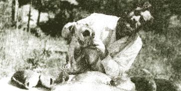
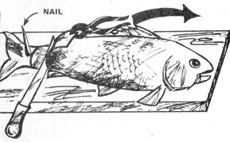
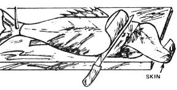
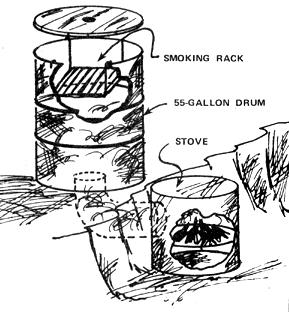

How To Clean, Fillet & Cook Carp
By the Mother Earth News editors
May/June 1975
Issue No. 33 - May/June 1975
Special Carp Catchin',Cleanin'
and Eatin'Section
by BARBARA CIARAMITARO
There's six inches of snow on the ground as I write, and we're still enjoying fried fish fillets and tasty "tuna" sandwiches. Are we going into hock at the local supermarket? Not at all! Last May and June, my husband spent four days out carp shooting with our neighbor, Richard Reed. Even though it was his first attempt at bow and arrow hunting, Jim bagged enough big fellows to put 35 pounds of fish fillets in the freezer locker in town . . . with enough left over to make 14 pints of canned fillet chunks (just like tuna without the mercury).
Instructions on carp hunting are Richard's department. In this article we'll just assume you've already got your catch . . . and fill you in on how those slimy, smelly fish that are attracting every fly for miles around can be turned into a year's worth of good eating.
A two-foot piece of board ten inches wide, with a large nail driven through one end, is a great help in the skinning process . . . and you'll need a rough wooden table-far from the house but near a convenient supply of running water-to carry out the messy job of filleting. Other necessities include a long, thin, sharp knife, a pair of pliers or vice grips, a pan of salted water (half a pound of salt per gallon) for the fillets, and a bucket for the non-edible parts.
First, the skinning. Hose the slime off the carp and impale it near the tail on the spike that sticks up through the board. With the point of the knife, pry off a row of scales far back on the carcass and cut the tough skin underneath. Next use the backbone of the fish to pry against as you slit the skin along the spine from the tail to the bony skull. Then open the belly from end to end, being careful not to spill the guts.
Catch hold of the flap of skin at the tail end with the pliers or vice grips and pull slowly toward the head, taking care to clean the meat off the skin with the knife if any starts to pull loose from the carcass (see Fig.. 1). An extra pair of hands is really helpful at this point: one person tugging the skin with the pliers while the other holds the carp in place and frees the clinging flesh.
Cut the meat along the spine and belly and across the skull end of the fillet, and begin to pull the flesh toward the tail, slicing it off the bony ribs as you go (see Fig. 2). Once the piece of meat is free, wash it off and put it into the pan of salted water. Then turn the carp over and repeat the process on the other side.
About the leftovers: Richard Reed uses the huge volume of eggs in the female carp as food for his flock of mallards, and we find that our chickens like the roe mixed with their mash.
The rest of the carcass makes a high-quality fertilizer. We grind the leavings in our shredder-grinder, for easier spreading and less worry about turning up sharp bones in the garden next spring. Bury the fish-wastes deep, so the dogs and cats won't dig up the patch to get at them, and stand back . . . because those plants will begin to grow and produce like nothing you've ever seen before,
Meanwhile, though, you've just cut up your first carp and will probably want to have a fresh fish fry right away. Soak the meat for ten minutes in the salted water, pat it dry, and cut it crosswise into slices the size of fish sticks. Beat one egg in a bowl with a little milk, dip the fillet strips into this mixture, and roll them in whole wheat flour or cornmeal seasoned with salt, parsley, and sage. Then get the frying pan hot and add vegetable oil or shortening. Brown the coated fish on all sides. (We mix the leftover egg and milk with the seasoned flour and add a dash of baking powder to make a dinner pancake:)
You'll find your carp feast worthy of all that labor. Carp has both. light and dark meat and is fattier than most fish, with a texture that reminds us of tender pork. The meat also has numerous sharp bones when cooked fresh and will have to be carefully picked over bit by bit before being served to young children. (Well, you knew there had to be some disadvantages!)
To prepare fresh fillets for the freezer, we simply soak them overnight in the salt water, pat the pieces dry, wrap them in plastic sacks (old bread bags work fine), push all the air out of the packages, twist-tie the ends, and drive the supply to the freezer locker.
Whole carp fillets can also be smoked. Fig. 3 shows a simple smoker we built into the side of a bank. It's made from a 55-gallon drum, the end of a large wooden cable drum, a length of stovepipe, a small, rusty heater stove, and an old oven rack. Since hardwood is scarce in Washington, we use bush maple branches for fuel. After two to eight hours of smoking at a low temperature, the carp can be eaten plain or else frozen or canned. (See MOTHER NOS. 21 and 22 for more smoking directions . . . and see also James E. Laubacher's letter on page 3 of MOTHER NO. 23, which warns against the use of refrigerator racks to hold food in a homemade smokehouse -MOTHER)
Much as we enjoy fresh fried carp, we prefer to can this meat because it makes the bones soft and digestible (a wholesome calcium bonus). Just cut the fresh or smoked fillets into strips and pack them tightly to within an inch of the top of pint canning jars. Add half a teaspoon of salt and two or three tablespoons of hot salad oil if desired. Put the cap on each jar and screw the band down firmly. Process the fish in a pressure cooker at 10 pounds for 100 minutes or at 15 pounds for 80 minutes. The finished product can be used in any recipe that calls for tuna.
That's a lot of good eating from an easily caught fish. . . and-once the messy business of filleting is over-the rest of the preparation is simple. Now that we've tried it, we think the lowly lake carp can't be beat as a source of free protein.
 fig 1 |
fig 2 |
 fig 3 |
|
 |
 |
 |